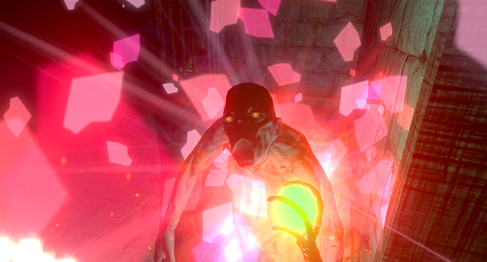

Left-Hand Path
Cast spells, perform rituals, learn terrible truths and try not to die in this Dark Souls-inspired roomscale RPG.
You awaken in a darkened castle – or is it something else? – full of dangerous creatures, a history of tragedy, and arcane powers that you can wield. From there, you’ll delve into the weird landscape of the Well Of All Rewards…
"One of the most interesting and promising experiments in making large, complex games I've seen on the Vive." - Many A True Nerd
While playing Left-Hand Path, you will:
- Learn arcane gestures to cast powerful spells: fling missiles, strike your foes with lightning, and conjure flaming boulders from the ground.
- Master a complex ritual magic system based on historical Hermetic magic.
- Become part of a history of human greed and ambition, tragedy, sacrifice in the name of love, and lust for power.
- Fight lethal monsters that will test both your physical skills – duck, dodge, outmanoeuvre – and your mastery of magic.
- Explore eerie landscapes, and interact with other humans – and with stranger creatures still.
- Gather the fallen Husks of your foes to gain power and unlock new abilities.
- Choose whether to explore nooks and crannies of the world to discover secret truths and powers.
"If RPGs in VR are your thing, definitely check this out." - UploadVR
Left-Hand Path ISN’T
- Left-Hand Path is NOT a seated VR experience. In Left-Hand Path you’ll gesture to cast spells, squat to avoid an axe larger than your whole body, dodge to let arrows whizz past you, duck to look into secret passages, hook hidden items into view, and more. It’s specifically designed for room-scale, and it’s room-scale only.
- Left-Hand Path is NOT a short arcade experience. It’s a fully-fleshed-out, voice-acted, animated RPG with over 3 hours’ play time in Early Access and around 8–10 hours’ total playtime planned.
- Left-Hand Path is NOT easy. To quote my biggest inspiration for the project, Dark Souls, “Prepare To Die”. But it’s also not unfair. Enemies do have weaknesses, and you have the power of magic itself. You’ll find your way.
We’ll see you in the Well of All Reward.
We Who Watch The Well await you…

Play Style Details
Locomotion: Left-Hand Path supports both teleport-style locomotion and sliding-style locomotion.
Left-Handed Support: Left-handed play is fully supported.
Minimum Spec: Left-Hand Path should run smoothly on any PC that’s VR-ready.
Play Time: Left-Hand Path is 3+ hours of play time in the initial Early Access release. I’ll be aggressively adding to that over time.
Short Quotes from Steam reviewers
“It’s the first game that I’ve lost myself in the Chaperone boundaries (ended up running into my couch) since I was so engrossed while attempting a ritual.” - Naravail
“A concise summary of Left Hand Path is basically three words: “Dark Souls VR.” “ - thepalatinepoet
“This is a phenominally unique dark fantasy VR game as well as a challenging rpg adventure.” - Ouijabored